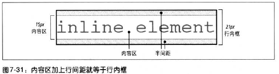

所有的元素都有一个line-height,但是实际上只影响行内元素和其他行内内容，不影响块级元素。可以为块级元素设置行高，但是这个值只是应用到块级元素的内联内容时才有影响。
下面这个段落设置了样式line-height:1em;border:1px dotted;但是由于没有内容，只看到了两条重叠在一起的线
对于p.spacious{line-height:24px;}意味着每个行框的最小高度为24px。
这个段落的行高为24px
small
这个段落的行高为24px
上述段落中即使是small,它的好高依然会是从父元素中继承的24px。
首先来看看行内非替换元素或匿名文本是如何建立框的。
这样就得到了行内框

下面看一个例子：
This is text,that is strongly emphasized and
尽管strong部分的字体较大，但是行高任然是16px.注意：这里尽管strong元素与其他文本元素的行内框(line-height)相同,但是他们排列的并不整齐，因为文本都是按基线排列的。而行内框确定了整个行框的高度。行框定义为行中最高行内框顶端到最低行内框底端的之间的距离。注意观察下面这个例子:
This is text,some of which is emphasized,plus other text
that is strongly emphasized, strong text
that is normal text is normal text
strong部分的行高设置为24pxThis is text,some of which is emphasized,plus other text
that is strongly emphasized, strong text
that is normal text is normal text
这个例子中，strong部分的内容“超过”其行高24px，它的真实高度是35px，由于行框是有各个行内框的最高点和最低点构成的，因此第二行的行高是24px（行内框的高度等于行高）。
接下来，我们让第二行的strong部分为35px看看
This is text,some of which is emphasized,plus other text
that is strongly emphasized, strong text
that is normal text is normal text